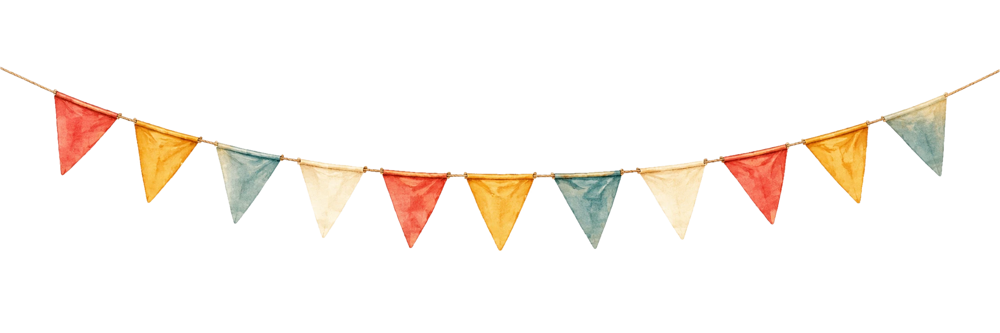

♪
UZ
ЎЗ
EN
RU
OLTIN YO'L · 1-PLATFORMA
TURMUSH QURMOQDALAR
PASTGA — POYEZD JO'NAYDI
▾
KM 1 · SHAHARDAN YO'LGA
BEKAT № 1
TAKLIFNOMA
OLTIN YO'L T.Y.
IKKI KISHILIK
Aziz do'stlar va yaqinlar,
quvonchga to'la qalb bilan sizni nikoh to'yimizga birga yo'l olishga taklif etamiz
jo'nash
·
KLASS
OLIY
O'RIN
№ 2
YO'NALISH
OLTIN
KM 14 · TOSH KO'PRIK

BEKAT № 2
JADVAL
kunimizning yo'l xaritasi
KM 22 · BOG' BEKATI
BEKAT № 3
MANZIL
BARCHA POYEZDLAR YETIB KELADIGAN MANZIL
XARITANI OCHISH →
BEKAT № 4
BILIB QO'YING
KIYIM
JO'NASH VAQTI
SOVG'ALAR
BEKAT BOSHLIG'I
BEKAT № 5
TELEGRAMMALAR
Yangi oilaga ezgu tilaklaringizni yo‘llang.
OLTIN YO'L TELEGRAFI
SHOSHILINCH
KIMDAN
XABAR
TELEGRAMMA YUBORISH
Tilagingiz yuborildi. Taklifnoma egasi tasdiqlagach ko‘rinadi.
Hozircha telegrammalar yo'q — birinchi bo'lib tilak yo'llang.
OXIRGI BEKAT
VISOL BEKATI
YETIB KELISHGA QOLDI
–
KUN
–
SOAT
–
DAQ
–
SON
bazm boshlanishiga —
OLTIN YO'L
nikoh to'yiga kichik sayohat
TAKLIFNOMANI OCHISH
CHIPTALARINGIZNI TAYYORLAB QO'YING